Frames 場面
Dawn to lantern-light in one day, shot mostly from about a metre off the ground, where a small robot sees the world and the cats are his peers.
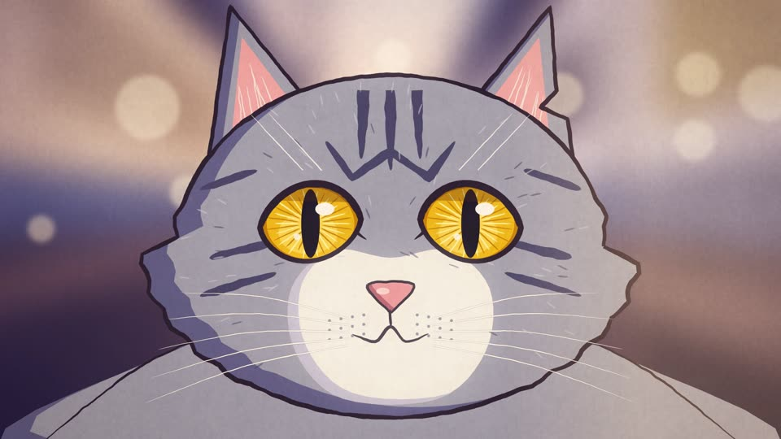
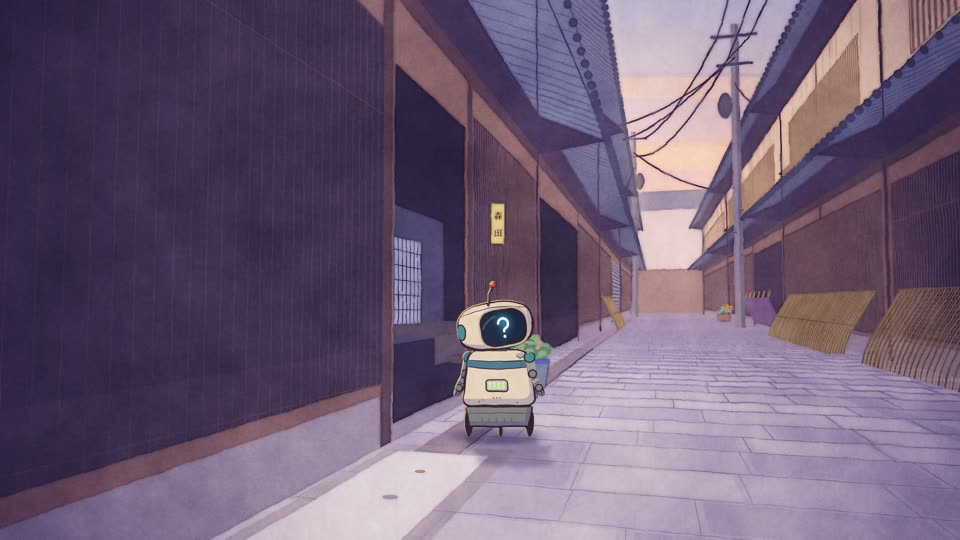
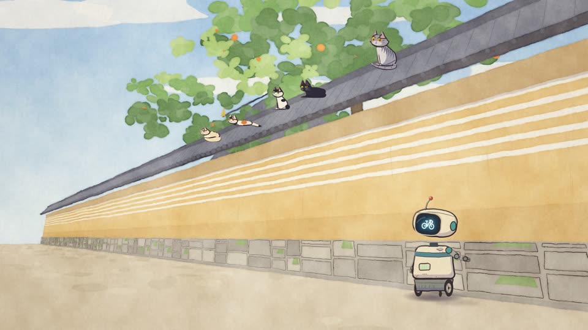
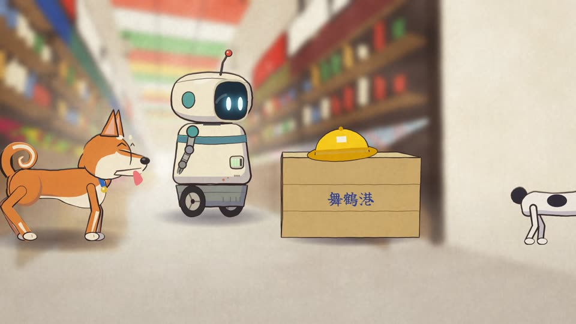
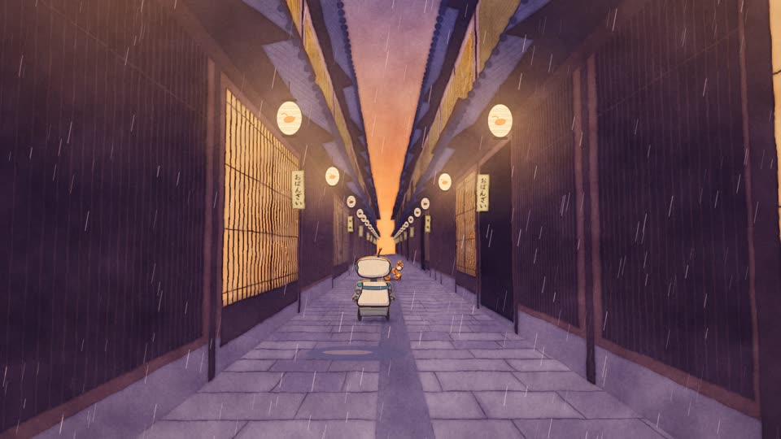
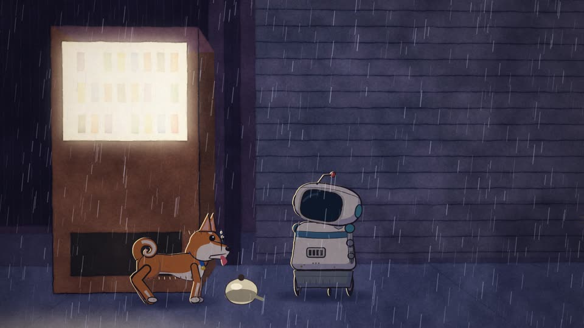
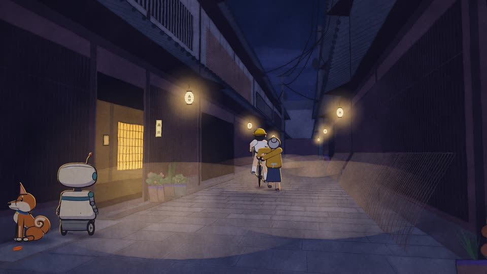
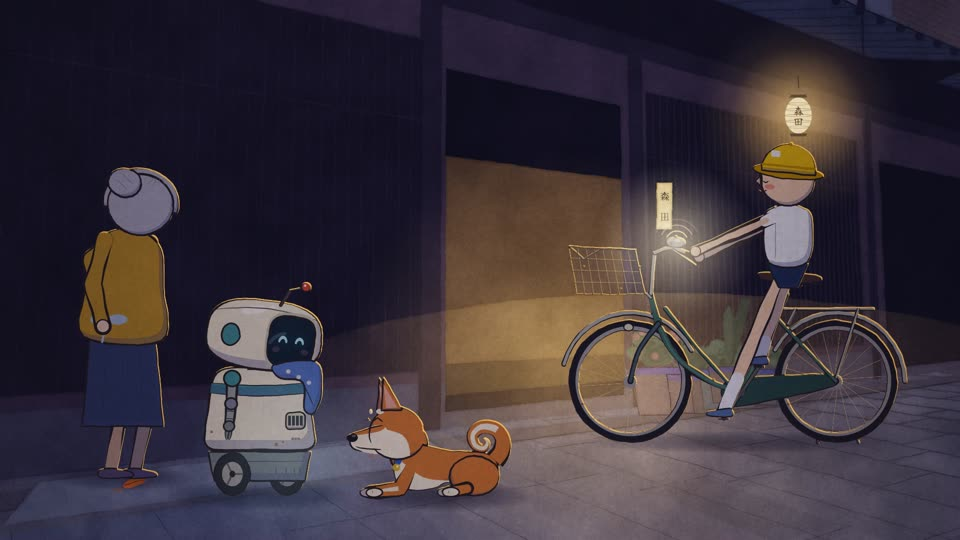
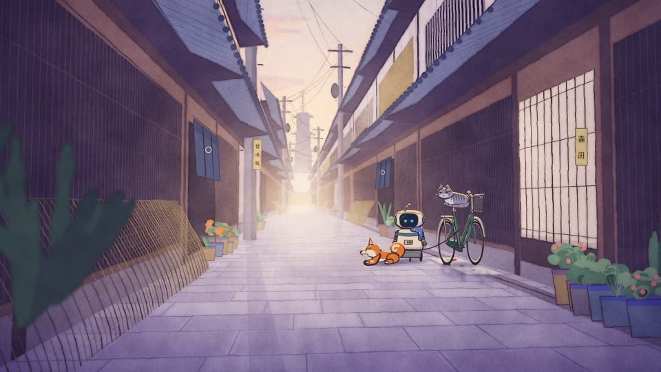
The prompt 依頼
This is the only prompt a person wrote. It went to Claude, word for word:
I just found this really long prompt on x and it produced a really fun video. Can we create a prompt that is equally as ridiculously long and detailed about creating a touching video about a robot that has to try and find his owners lost bicycle somewhere in the back streets of kyoto. Make sure there are dogs and cats and that the video is Japanese style cartoony graphics. The dude said Claude ran for 12 hours. Write the prompt for me
The brief Claude wrote from it 2,179 words
Nobody wrote this brief by hand, and nobody read it before it went straight to Claude Code, which made the film. Private paths and amounts stay as placeholders. The brief asks for fal and ElevenLabs, but neither could be reached from the build environment. So every frame was drawn in code, every note was scored in code, and no generated footage was used.
I want you to independently do an end-to-end complete pass on making a short animated film. It's called "The Bicycle." It's a touching story about a small household robot who has to find his owner's lost bicycle somewhere in the back streets of Kyoto. There is no script yet. There is no audio yet. There is no storyboard yet. You are going to make all of it, start to finish, and I'm not going to be here to answer questions, so make reasonable assumptions, write them down in a DECISIONS.md as you go, and keep moving.
The story at the highest level: the owner is an old woman, maybe seventy, who lives alone in a narrow machiya somewhere off a quiet lane in Higashiyama. Her bicycle is old, a step-through mamachari with a rusted basket and a bell that doesn't work properly. It has sentimental weight that you should decide on and reveal slowly, not explain up front. Maybe it was her late husband's, maybe it was the bike she rode to her first job, maybe she taught her daughter to ride on the same street. Pick one and commit. The robot is her helper. He is small, waist-high, a bit dented, a little slow, clearly not a fancy model, and he loves her in whatever way a robot loves. One morning the bicycle is gone from the front of the house. She doesn't say much about it. She just looks at the empty spot and goes back inside. The robot decides, on his own, without being asked, to go and find it. The whole film is his search through Kyoto over one day, from early morning to lanterns coming on at night, and the ending should land emotionally. I don't want it saccharine and I don't want it cynical. I want it to feel like the ending of a good short you'd see at a festival where the room goes quiet for a second before people clap.
There must be dogs and cats. Not as background decoration, as actual characters with actual roles in the story. I want a shiba inu who is suspicious of the robot at first and then becomes his guide, maybe because the dog saw who took the bicycle, maybe because the dog just likes chasing things. I want a whole gang of Kyoto street cats, the kind that sit on temple walls and under vending machines, and I want them to be the robot's informants, an unhelpful unreliable network of cats who each know a tiny piece of the answer. Think about how cats and dogs move differently and make sure the animation respects that. A cat is liquid. A shiba is a spring. The robot is neither and that contrast is a big part of the charm. Also the robot should not be able to talk to the animals in words. Figure out how they communicate anyway. That's the fun part.
Visually, I want Japanese-style cartoony graphics. Not photoreal, not 3D Pixar, I think Pixar is kind of slop for this. I mean hand-drawn feeling, flat cel shading, thick clean linework, watercolor-ish backgrounds, the sort of thing you'd see in a Japanese children's picture book or a gentle TV anime from the 90s or 2000s. You know the lineage here. Don't clone any one studio and definitely don't try to reproduce a specific existing character or film, come up with a coherent style of your own that sits in that tradition and that works well with the image gen models available to you. Warm and soft but with real draftsmanship in the backgrounds. Kyoto backstreets are made of texture: wooden lattice, noren curtains, potted plants crammed onto doorsteps, moss on stone, tangled power lines, vending machines glowing at dusk, the Kamo river with people sitting evenly spaced along the bank, the lanterns in Pontocho, the torii tunnel at Fushimi Inari if you want a big set piece, the Philosopher's Path, Nishiki market, the little canals in Gion. Pull real references from the internet freely. Study photographs of these places at different times of day. Study how Japanese animators draw Kyoto specifically, the way they simplify the architecture without losing the feeling of it.
Think about your current capabilities and what's realistic. You have the fal API key in [path] and there's documentation for the image and video models in my markdown files in [folder]. You should read all of it before you generate a single frame. Use the image models to generate a proper style sheet first, and I mean a real one: a page of color palettes, line weights, how eyes are drawn, how shadows fall, three or four background studies at different times of day, and a "do not do this" section. Then generate character sheets for the robot (front, side, three-quarter, a few expressions, a few poses, how he looks when he's tired, how he looks when he's happy), the old woman, the shiba, and at least four distinct cats who look nothing like each other. Do a turnaround for the bicycle too, because the bicycle is a character in this film and we need it to be recognizable in silhouette from across a street. Iterate on all of these until they're consistent. If the model drifts, fix the prompt, add reference images, use whatever consistency features are available. Do not move on until you can generate the robot ten times and get the same robot ten times.
Then design your sets. Generate the machiya, the lane outside it, the river, the market, the shrine, the alley where the bicycle is finally found, and anything else the story needs. Think about camera height. A small robot sees the world from about a metre off the ground and the film should mostly be shot from there, which makes everything feel bigger and makes the cats feel like peers. Then insert the characters into the sets and use the video model to generate the base shots. Read the video model docs carefully, particularly around reference images, duration limits, camera motion prompts, and whether it can take an audio reference. Build a shot list first. Every shot gets a number, a duration, a description, a camera move, which characters are in it, what emotional beat it's carrying, and what the audio is doing. Do not generate anything without a shot list. You will want to run the video model a lot, and you will want verification loops: after every batch, extract frames, look at them, check the character is on-model, check the motion isn't broken, check the lighting matches the time of day the shot is supposed to be, and regenerate what's wrong. Keep a log of what worked and what didn't so you stop repeating mistakes.
There's no dialogue in this film. I don't want any spoken words at all. The old woman can hum. The robot can beep and whir. The animals can bark and meow. That's it. So the score and sound design are doing the emotional heavy lifting and I want you to take that seriously. Use the ElevenLabs API for sound design, the docs and key are in [path]. Ambient Kyoto: cicadas if it's summer, bicycle bells, the specific sound of a train crossing, temple bells, water in a stone channel, a shopkeeper rolling up a shutter, the crinkle of a plastic bag, cats. Layer it properly. For the music, I want a small, simple, memorable melody, piano or a plucked instrument, something that could be whistled, that appears in fragments through the film and only plays in full at the end. If you can generate music with the tools available, do it. If you can't, write it in JavaScript with the web audio API, I don't care how, but there must be an original score and it must be timed to picture. You can use the video scoring skill to learn how to build music against timecodes.
Now the part I care about most. Once you have your base video assets from the video model, I don't want to ship them as-is. I want you to use your visual reasoning and your ability to build animations in JavaScript and reconstruct the whole film as an overlay, like rotoscoping, like the technique where you shoot live action first and then draw over it. The video gen work is scaffolding. It gives you physically plausible motion, camera moves, consistent characters, and real spatial layouts, and then you draw the actual film on top in canvas or SVG or whatever you're strongest in, with a hand-drawn, slightly wobbly line, paper texture, watercolor bleeds, the frame rate dropped to something like twelve frames a second with held frames so it feels animated by a person and not rendered by a machine. Add the things video models can't do well: rain drawn as individual lines, a bicycle bell that visibly rings, cat whiskers, the little animated puff when the robot's wheels hit a puddle, sakura petals or ginkgo leaves depending on the season you choose, the flicker of a lantern. Ideally we never see the raw generated footage at all. Everything the viewer sees is the beautiful drawing you produced.
Text on screen: use it sparingly and beautifully. A title card in a nice Japanese-influenced typeface, maybe a chapter card or two with the time of day in kanji and English, and the credits. Don't subtitle anything because there's nothing to subtitle. If the old woman leaves a note or there's a sign on a shop, hand-letter it as part of the drawing.
Pacing and attention. This is going to be posted on X and I want it to work there, which means the first five seconds have to make someone stop scrolling and the whole thing should probably be between two and four minutes. Open on something with an immediate hook: the empty spot where the bicycle was, or the robot's face, or a cat staring directly into camera. Study short films and anime openings and think about how they earn attention without shouting. Study how Japanese animators use stillness, the held shot of a landscape with only one thing moving in it, and use that. The emotional structure should be roughly: quiet morning, the loss, the decision, the search escalating through increasingly strange corners of the city with the animals, a low point where it's dark and the robot's battery is running down and he's alone, a turn, the finding, and the return home. Decide who took the bicycle and make it human and forgivable. Maybe a kid borrowed it. Maybe it was moved by the city for illegal parking, which is a real Kyoto thing. Maybe it was never stolen at all. Pick the answer that makes the ending land hardest.
Be rigorous about planning before you generate. The most common failure mode here is that pieces don't cohere, the colors shift between shots, the robot's proportions change, the music hits at the wrong moment, and it all feels jarring. Do the thought work first. Write the story beat by beat. Write the shot list. Make the style sheet. Make the character sheets. Only then generate. Then assemble a rough cut, watch the entire thing, take screenshots at every shot, and ask yourself honestly whether each one is up to the bar. Go back and redo what isn't. Watch it again. Do this as many times as it takes. Check the audio sync. Check the continuity of the time of day across the whole film. Check that the shiba's tail curls the same way in every shot.
You can go through the full [folder] and look at the other work I've done. You can use the mesh skill to look at the compendium of references I've pulled. You can search the internet for anything you want: Kyoto street photography, animation reference, how to draw a mamachari, how cats jump, what the Kamo river looks like at 6am. You can use the fal credits freely, there's roughly [amount] there, be economical but don't be timid. I'm on a Max plan with 100% usage available and I want you to spend it. Push tokens aggressively but smartly. You can run for as long as this takes.
I really want to emphasize that you are far more capable than you think you are. You're an agent, a language model, a visual reasoning system, and now a director, an animator, a sound designer and a composer, all at once. Have that mindset the whole way through. The goal is a short film that makes people on tech Twitter feel something unexpected on a Wednesday afternoon. The stretch goal is something that gets passed around as the moment people realized an AI could make you cry about a robot and a bicycle.
Deliverables: the final MP4 at 1080p with embedded audio, a square or vertical crop for X if it's not too painful, the style sheet and character sheets as PNGs, the shot list, the DECISIONS.md, and a short WRITEUP.md explaining what you made and why, in your own voice.
Make no mistakes.
How it was made 制作
All of it is code: a perspective camera in metres, a watercolour simulation, cel-shaded rigs with brush lines that boil at 12 drawings a second, and a score built from CC0 instrument samples.
Sheets 設定
The style sheet and the character sheets. Click any sheet to open the full-resolution PNG.
{kind=link}
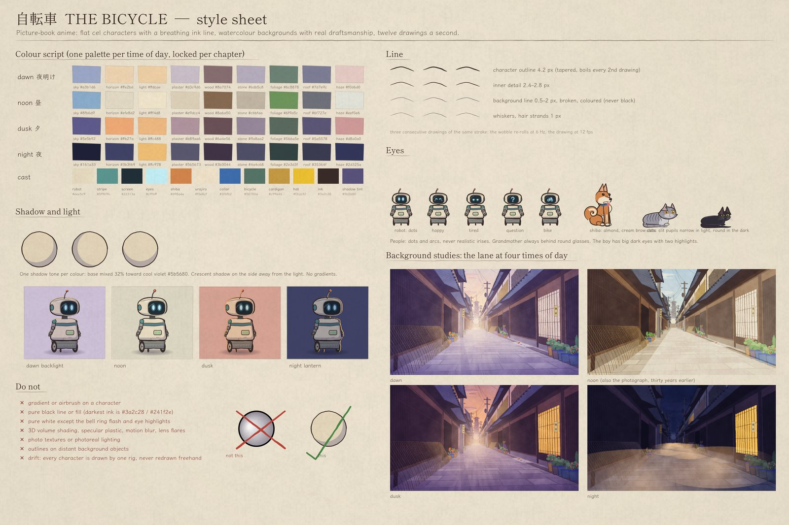
Style sheetpalettes, line weights, eyes, shadows, background studies, and what not to do{kind=link}
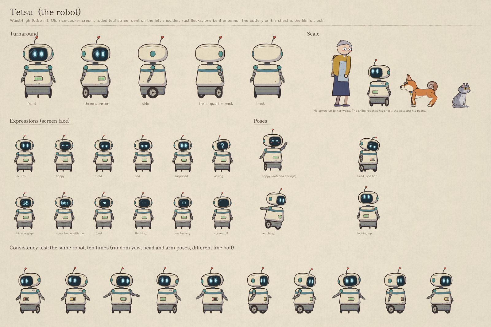
The robotturnaround, expressions, poses, tired, happy{kind=link}
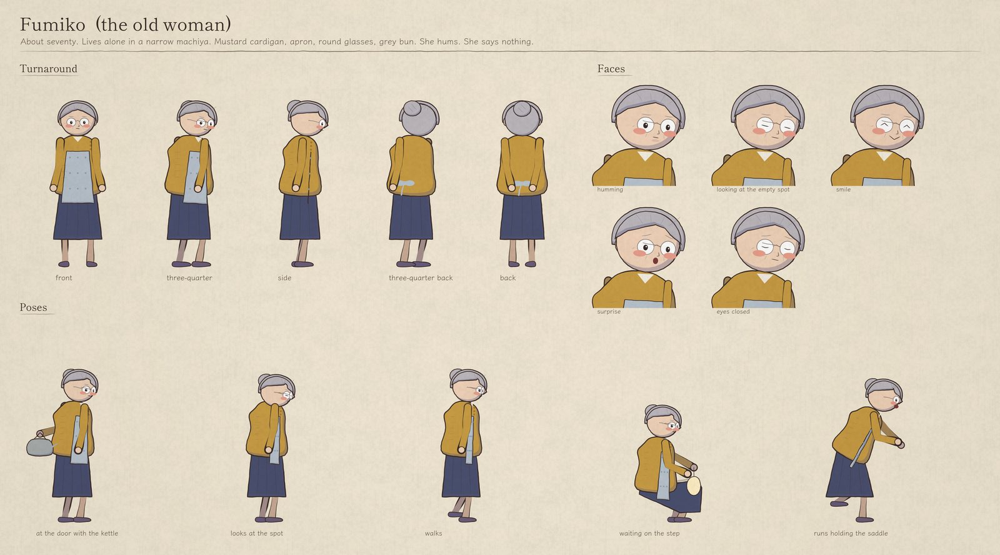
Morita-santhe owner, about seventy{kind=link}
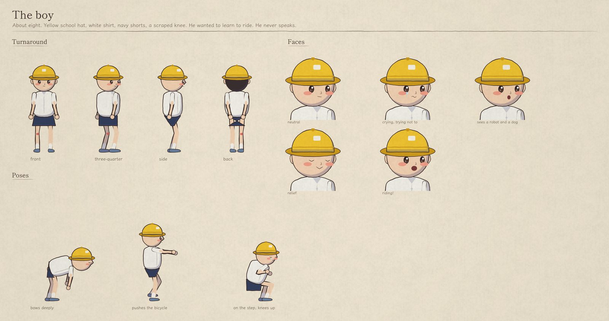
The boyabout eight, learning to ride{kind=link}
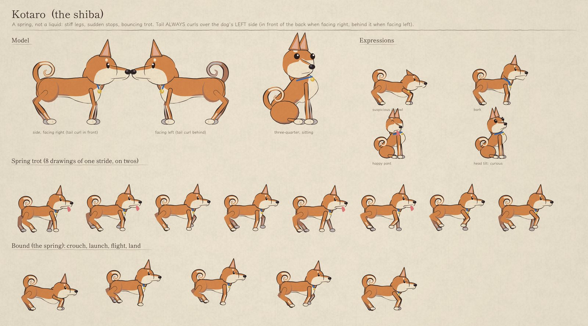
The shibasuspicious, then the guide; tail curls to his left, always{kind=link}
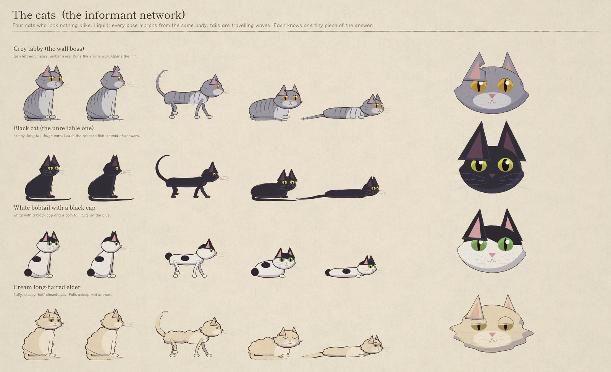
The catsfour informants who look nothing alike{kind=link}
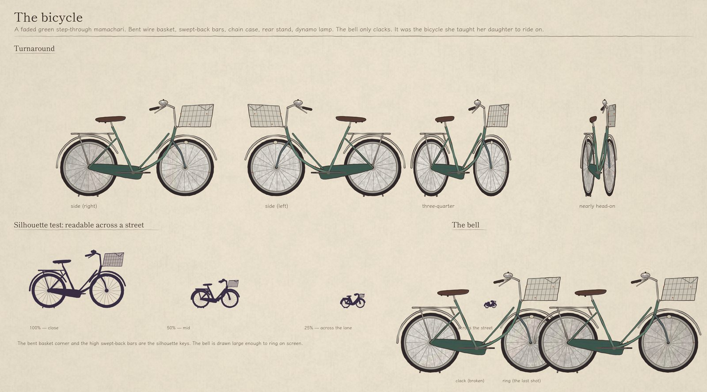
The bicyclea step-through mamachari, recognisable in silhouette